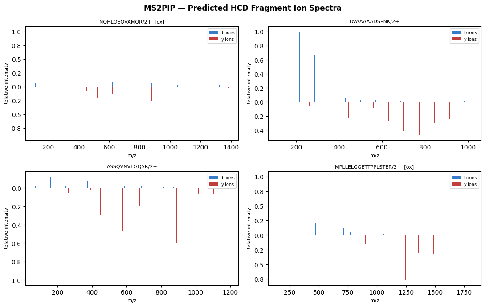

<!DOCTYPE html>
<html xmlns="http://www.w3.org/1999/xhtml" lang="en" xml:lang="en"><head>

<meta charset="utf-8">
<meta name="generator" content="quarto-1.9.38">

<meta name="viewport" content="width=device-width, initial-scale=1.0, user-scalable=yes">


<title>MS2PIP, DeepLC &amp; IM2Deep: Multi-modal Peptide Property Prediction</title>
<style>
/* Default styles provided by pandoc.
** See https://pandoc.org/MANUAL.html#variables-for-html for config info.
*/
code{white-space: pre-wrap;}
span.smallcaps{font-variant: small-caps;}
div.columns{display: flex; gap: min(4vw, 1.5em);}
div.column{flex: auto; overflow-x: auto;}
div.hanging-indent{margin-left: 1.5em; text-indent: -1.5em;}
ul.task-list{list-style: none;}
ul.task-list li input[type="checkbox"] {
  width: 0.8em;
  margin: 0 0.8em 0.2em -1em; /* quarto-specific, see https://github.com/quarto-dev/quarto-cli/issues/4556 */ 
  vertical-align: middle;
}
/* CSS for syntax highlighting */
html { -webkit-text-size-adjust: 100%; }
pre > code.sourceCode { white-space: pre; position: relative; }
pre > code.sourceCode > span { display: inline-block; line-height: 1.25; }
pre > code.sourceCode > span:empty { height: 1.2em; }
.sourceCode { overflow: visible; }
code.sourceCode > span { color: inherit; text-decoration: inherit; }
div.sourceCode { margin: 1em 0; }
pre.sourceCode { margin: 0; }
@media screen {
div.sourceCode { overflow: auto; }
}
@media print {
pre > code.sourceCode { white-space: pre-wrap; }
pre > code.sourceCode > span { text-indent: -5em; padding-left: 5em; }
}
pre.numberSource code
  { counter-reset: source-line 0; }
pre.numberSource code > span
  { position: relative; left: -4em; counter-increment: source-line; }
pre.numberSource code > span > a:first-child::before
  { content: counter(source-line);
    position: relative; left: -1em; text-align: right; vertical-align: baseline;
    border: none; display: inline-block;
    -webkit-touch-callout: none; -webkit-user-select: none;
    -khtml-user-select: none; -moz-user-select: none;
    -ms-user-select: none; user-select: none;
    padding: 0 4px; width: 4em;
  }
pre.numberSource { margin-left: 3em;  padding-left: 4px; }
div.sourceCode
  {   }
@media screen {
pre > code.sourceCode > span > a:first-child::before { text-decoration: underline; }
}
</style>


<script src="https://cdn.jsdelivr.net/npm/jquery@3.5.1/dist/jquery.min.js" integrity="sha384-ZvpUoO/+PpLXR1lu4jmpXWu80pZlYUAfxl5NsBMWOEPSjUn/6Z/hRTt8+pR6L4N2" crossorigin="anonymous"></script><script src="peptide-predictor_files/libs/clipboard/clipboard.min.js"></script>
<script src="peptide-predictor_files/libs/quarto-html/quarto.js" type="module"></script>
<script src="peptide-predictor_files/libs/quarto-html/tabsets/tabsets.js" type="module"></script>
<script src="peptide-predictor_files/libs/quarto-html/popper.min.js"></script>
<script src="peptide-predictor_files/libs/quarto-html/tippy.umd.min.js"></script>
<script src="peptide-predictor_files/libs/quarto-html/anchor.min.js"></script>
<link href="peptide-predictor_files/libs/quarto-html/tippy.css" rel="stylesheet">
<link href="peptide-predictor_files/libs/quarto-html/quarto-syntax-highlighting-15634bcf2e68342d4ad2dfa704d543f6.css" rel="stylesheet" id="quarto-text-highlighting-styles">
<script src="peptide-predictor_files/libs/bootstrap/bootstrap.min.js"></script>
<link href="peptide-predictor_files/libs/bootstrap/bootstrap-icons.css" rel="stylesheet">
<link href="peptide-predictor_files/libs/bootstrap/bootstrap-efbb37e9afcc02144ebbc7afd12a776f.min.css" rel="stylesheet" append-hash="true" id="quarto-bootstrap" data-mode="light">
<script src="https://cdn.jsdelivr.net/npm/requirejs@2.3.6/require.min.js" integrity="sha384-c9c+LnTbwQ3aujuU7ULEPVvgLs+Fn6fJUvIGTsuu1ZcCf11fiEubah0ttpca4ntM sha384-6V1/AdqZRWk1KAlWbKBlGhN7VG4iE/yAZcO6NZPMF8od0vukrvr0tg4qY6NSrItx" crossorigin="anonymous"></script>

<script type="application/javascript">define('jquery', [],function() {return window.jQuery;})</script>


</head>

<body class="fullcontent quarto-light">

<div id="quarto-content" class="page-columns page-rows-contents page-layout-article">

<main class="content" id="quarto-document-content">

<header id="title-block-header" class="quarto-title-block default">
<div class="quarto-title">
<h1 class="title">MS2PIP, DeepLC &amp; IM2Deep: Multi-modal Peptide Property Prediction</h1>
</div>


<div class="quarto-title-meta">

    
  
    
  </div>
  


</header>


<p><strong>Tool versions:</strong> ms2pip, deeplc, im2deep — latest PyPI releases (see install cell) <strong>Estimated time:</strong> 20 min <strong>Level:</strong> intermediate <strong>Last tested:</strong> 2026-06-10</p>
<section id="abstract" class="level2">
<h2 class="anchored" data-anchor-id="abstract">Abstract</h2>
<p>This tutorial predicts three complementary LC-IM-MS/MS properties for real HeLa-derived peptides using CompOmics tools: fragment ion intensities with <a href="https://github.com/compomics/ms2pip">MS2PIP</a>, retention time with <a href="https://github.com/compomics/DeepLC">DeepLC</a>, and collisional cross-section with <a href="https://github.com/compomics/IM2Deep">IM2Deep</a>. By the end, you will have produced a predicted MS2 spectrum, a calibrated retention time scatter plot, and a CCS correlation plot, each benchmarked against observed values from a public dataset.</p>
<table class="caption-top table">
<thead>
<tr class="header">
<th>Tool</th>
<th>Prediction</th>
<th>Model</th>
</tr>
</thead>
<tbody>
<tr class="odd">
<td><a href="https://github.com/compomics/ms2pip">MS2PIP</a></td>
<td>Fragment ion intensities (b/y)</td>
<td>HCD2021</td>
</tr>
<tr class="even">
<td><a href="https://github.com/compomics/DeepLC">DeepLC</a></td>
<td>Retention time (RT)</td>
<td>Calibrated</td>
</tr>
<tr class="odd">
<td><a href="https://github.com/compomics/IM2Deep">IM2Deep</a></td>
<td>Collisional cross-section (CCS)</td>
<td>Direct</td>
</tr>
</tbody>
</table>
</section>
<section id="learning-objectives" class="level2">
<h2 class="anchored" data-anchor-id="learning-objectives">Learning objectives</h2>
<p>By the end of this tutorial, you will be able to:</p>
<ul>
<li>Convert MaxQuant modified-sequence notation to ProForma</li>
<li>Predict fragment ion intensities with MS2PIP and interpret a predicted b/y-ion spectrum</li>
<li>Calibrate and run DeepLC retention time predictions, and evaluate them against observed RT</li>
<li>Predict CCS values with IM2Deep without calibration and evaluate them against observed CCS</li>
</ul>
</section>
<section id="prerequisites" class="level2">
<h2 class="anchored" data-anchor-id="prerequisites">Prerequisites</h2>
<ul>
<li>Familiarity with basic Python and pandas</li>
<li>Basic understanding of peptide fragmentation (b/y-ions) and LC-MS/MS</li>
</ul>
</section>
<section id="input-data" class="level2">
<h2 class="anchored" data-anchor-id="input-data">Input data</h2>
<p>The <a href="https://proteomicsml.org/datasets/ionmobility/Meier_IM_CCS/">Meier <em>et al.</em> IM-CCS dataset</a>, hosted on <a href="https://proteomicsml.org">ProteomicsML</a>. It was acquired on a timsTOF Pro instrument and covers three ProteomeXchange depositions (PXD010012, PXD019086, PXD017703): 718 K high-confidence PSMs with observed retention time and CCS. The dataset (~23 MB) is downloaded directly from the ProteomicsML GitHub repository in Section 2.</p>
</section>
<section id="setup" class="level2">
<h2 class="anchored" data-anchor-id="setup">1. Setup</h2>
<div id="cell-install" class="cell" data-quarto-private-1="{&quot;key&quot;:&quot;execution&quot;,&quot;value&quot;:{&quot;iopub.execute_input&quot;:&quot;2026-06-10T14:58:09.748442Z&quot;,&quot;iopub.status.busy&quot;:&quot;2026-06-10T14:58:09.748319Z&quot;,&quot;iopub.status.idle&quot;:&quot;2026-06-10T14:58:09.752806Z&quot;,&quot;shell.execute_reply&quot;:&quot;2026-06-10T14:58:09.751916Z&quot;}}" data-execution_count="1">
<div class="code-copy-outer-scaffold"><div class="sourceCode cell-code" id="cb1"><pre class="sourceCode python code-with-copy"><code class="sourceCode python"><span id="cb1-1"><a href="#cb1-1" aria-hidden="true" tabindex="-1"></a><span class="co"># Install dependencies (run once)</span></span>
<span id="cb1-2"><a href="#cb1-2" aria-hidden="true" tabindex="-1"></a><span class="co"># !pip install ms2pip deeplc im2deep psm-utils tensorflow-cpu</span></span></code></pre></div><button title="Copy to Clipboard" class="code-copy-button"><i class="bi"></i></button></div>
</div>
<div id="cell-imports" class="cell" data-quarto-private-1="{&quot;key&quot;:&quot;execution&quot;,&quot;value&quot;:{&quot;iopub.execute_input&quot;:&quot;2026-06-10T14:58:09.754228Z&quot;,&quot;iopub.status.busy&quot;:&quot;2026-06-10T14:58:09.754096Z&quot;,&quot;iopub.status.idle&quot;:&quot;2026-06-10T14:58:13.568898Z&quot;,&quot;shell.execute_reply&quot;:&quot;2026-06-10T14:58:13.568114Z&quot;}}" data-execution_count="2">
<div class="code-copy-outer-scaffold"><div class="sourceCode cell-code" id="cb2"><pre class="sourceCode python code-with-copy"><code class="sourceCode python"><span id="cb2-1"><a href="#cb2-1" aria-hidden="true" tabindex="-1"></a><span class="im">import</span> io</span>
<span id="cb2-2"><a href="#cb2-2" aria-hidden="true" tabindex="-1"></a><span class="im">import</span> re</span>
<span id="cb2-3"><a href="#cb2-3" aria-hidden="true" tabindex="-1"></a><span class="im">import</span> zipfile</span>
<span id="cb2-4"><a href="#cb2-4" aria-hidden="true" tabindex="-1"></a></span>
<span id="cb2-5"><a href="#cb2-5" aria-hidden="true" tabindex="-1"></a><span class="im">import</span> matplotlib.pyplot <span class="im">as</span> plt</span>
<span id="cb2-6"><a href="#cb2-6" aria-hidden="true" tabindex="-1"></a><span class="im">import</span> matplotlib.ticker <span class="im">as</span> ticker</span>
<span id="cb2-7"><a href="#cb2-7" aria-hidden="true" tabindex="-1"></a><span class="im">import</span> numpy <span class="im">as</span> np</span>
<span id="cb2-8"><a href="#cb2-8" aria-hidden="true" tabindex="-1"></a><span class="im">import</span> pandas <span class="im">as</span> pd</span>
<span id="cb2-9"><a href="#cb2-9" aria-hidden="true" tabindex="-1"></a><span class="im">import</span> requests</span>
<span id="cb2-10"><a href="#cb2-10" aria-hidden="true" tabindex="-1"></a><span class="im">from</span> scipy.stats <span class="im">import</span> pearsonr</span>
<span id="cb2-11"><a href="#cb2-11" aria-hidden="true" tabindex="-1"></a></span>
<span id="cb2-12"><a href="#cb2-12" aria-hidden="true" tabindex="-1"></a><span class="im">from</span> deeplc <span class="im">import</span> DeepLC</span>
<span id="cb2-13"><a href="#cb2-13" aria-hidden="true" tabindex="-1"></a><span class="im">from</span> im2deep <span class="im">import</span> predict_ccs</span>
<span id="cb2-14"><a href="#cb2-14" aria-hidden="true" tabindex="-1"></a><span class="im">from</span> ms2pip <span class="im">import</span> predict_batch</span>
<span id="cb2-15"><a href="#cb2-15" aria-hidden="true" tabindex="-1"></a><span class="im">from</span> psm_utils <span class="im">import</span> PSM, PSMList</span></code></pre></div><button title="Copy to Clipboard" class="code-copy-button"><i class="bi"></i></button></div>
<div class="cell-output cell-output-stderr">
<pre><code>WARNING: All log messages before absl::InitializeLog() is called are written to STDERR
I0000 00:00:1781103491.484486  615873 port.cc:153] oneDNN custom operations are on. You may see slightly different numerical results due to floating-point round-off errors from different computation orders. To turn them off, set the environment variable `TF_ENABLE_ONEDNN_OPTS=0`.
WARNING: All log messages before absl::InitializeLog() is called are written to STDERR
I0000 00:00:1781103492.782190  615873 port.cc:153] oneDNN custom operations are on. You may see slightly different numerical results due to floating-point round-off errors from different computation orders. To turn them off, set the environment variable `TF_ENABLE_ONEDNN_OPTS=0`.</code></pre>
</div>
</div>
<div id="64243b96" class="cell" data-quarto-private-1="{&quot;key&quot;:&quot;execution&quot;,&quot;value&quot;:{&quot;iopub.execute_input&quot;:&quot;2026-06-10T14:58:13.570829Z&quot;,&quot;iopub.status.busy&quot;:&quot;2026-06-10T14:58:13.570514Z&quot;,&quot;iopub.status.idle&quot;:&quot;2026-06-10T14:58:13.576720Z&quot;,&quot;shell.execute_reply&quot;:&quot;2026-06-10T14:58:13.576035Z&quot;}}" data-execution_count="3">
<div class="code-copy-outer-scaffold"><div class="sourceCode cell-code" id="cb4"><pre class="sourceCode python code-with-copy"><code class="sourceCode python"><span id="cb4-1"><a href="#cb4-1" aria-hidden="true" tabindex="-1"></a><span class="op">%</span>matplotlib inline</span></code></pre></div><button title="Copy to Clipboard" class="code-copy-button"><i class="bi"></i></button></div>
</div>
</section>
<section id="dataset" class="level2">
<h2 class="anchored" data-anchor-id="dataset">2. Dataset</h2>
<p>The <a href="https://proteomicsml.org/datasets/ionmobility/Meier_IM_CCS/">Meier <em>et al.</em> IM-CCS dataset</a> was acquired on a timsTOF Pro instrument and covers three ProteomeXchange depositions (PXD010012, PXD019086, PXD017703). It contains 718 K high-confidence PSMs with four key measured properties:</p>
<table class="caption-top table">
<colgroup>
<col style="width: 38%">
<col style="width: 61%">
</colgroup>
<thead>
<tr class="header">
<th>Column</th>
<th>Description</th>
</tr>
</thead>
<tbody>
<tr class="odd">
<td><code>Modified sequence</code></td>
<td>MaxQuant notation: underscores mark the termini, modifications in parentheses, e.g.&nbsp;<code>_AAEM(ox)K_</code></td>
</tr>
<tr class="even">
<td><code>Charge</code></td>
<td>Precursor charge state</td>
</tr>
<tr class="odd">
<td><code>Retention time</code></td>
<td>In <strong>seconds</strong> when <code>PT=False</code> (standard 120 min gradient); in minutes when <code>PT=True</code></td>
</tr>
<tr class="even">
<td><code>CCS</code></td>
<td>Collisional cross-section in Ų, measured by TIMS</td>
</tr>
<tr class="odd">
<td><code>PT</code></td>
<td><code>True</code> = phosphopeptide-enriched short gradient; <code>False</code> = standard proteome run</td>
</tr>
</tbody>
</table>
<p>We download the dataset directly from the ProteomicsML GitHub repository.</p>
<div id="cell-download" class="cell" data-quarto-private-1="{&quot;key&quot;:&quot;execution&quot;,&quot;value&quot;:{&quot;iopub.execute_input&quot;:&quot;2026-06-10T14:58:13.578001Z&quot;,&quot;iopub.status.busy&quot;:&quot;2026-06-10T14:58:13.577883Z&quot;,&quot;iopub.status.idle&quot;:&quot;2026-06-10T14:58:14.913973Z&quot;,&quot;shell.execute_reply&quot;:&quot;2026-06-10T14:58:14.913257Z&quot;}}" data-execution_count="4">
<div class="code-copy-outer-scaffold"><div class="sourceCode cell-code" id="cb5"><pre class="sourceCode python code-with-copy"><code class="sourceCode python"><span id="cb5-1"><a href="#cb5-1" aria-hidden="true" tabindex="-1"></a>url <span class="op">=</span> (</span>
<span id="cb5-2"><a href="#cb5-2" aria-hidden="true" tabindex="-1"></a>    <span class="st">"https://raw.githubusercontent.com/ProteomicsML/ProteomicsML/main"</span></span>
<span id="cb5-3"><a href="#cb5-3" aria-hidden="true" tabindex="-1"></a>    <span class="st">"/datasets/ionmobility/Meier_IM_CCS/combined_sm.zip"</span></span>
<span id="cb5-4"><a href="#cb5-4" aria-hidden="true" tabindex="-1"></a>)</span>
<span id="cb5-5"><a href="#cb5-5" aria-hidden="true" tabindex="-1"></a></span>
<span id="cb5-6"><a href="#cb5-6" aria-hidden="true" tabindex="-1"></a><span class="bu">print</span>(<span class="st">"Downloading dataset (~23 MB)..."</span>)</span>
<span id="cb5-7"><a href="#cb5-7" aria-hidden="true" tabindex="-1"></a>response <span class="op">=</span> requests.get(url, timeout<span class="op">=</span><span class="dv">120</span>)</span>
<span id="cb5-8"><a href="#cb5-8" aria-hidden="true" tabindex="-1"></a><span class="cf">with</span> zipfile.ZipFile(io.BytesIO(response.content)) <span class="im">as</span> z:</span>
<span id="cb5-9"><a href="#cb5-9" aria-hidden="true" tabindex="-1"></a>    df_raw <span class="op">=</span> pd.read_csv(z.<span class="bu">open</span>(<span class="st">"combined_sm.csv"</span>))</span>
<span id="cb5-10"><a href="#cb5-10" aria-hidden="true" tabindex="-1"></a></span>
<span id="cb5-11"><a href="#cb5-11" aria-hidden="true" tabindex="-1"></a><span class="bu">print</span>(<span class="ss">f"Loaded </span><span class="sc">{</span><span class="bu">len</span>(df_raw)<span class="sc">:,}</span><span class="ss"> PSMs"</span>)</span>
<span id="cb5-12"><a href="#cb5-12" aria-hidden="true" tabindex="-1"></a>df_raw.head()</span></code></pre></div><button title="Copy to Clipboard" class="code-copy-button"><i class="bi"></i></button></div>
<div class="cell-output cell-output-stdout">
<pre><code>Downloading dataset (~23 MB)...
Loaded 718,917 PSMs</code></pre>
</div>
<div class="cell-output cell-output-display" data-execution_count="4">
<div>


<table class="dataframe caption-top table table-sm table-striped small" data-border="1">
<thead>
<tr class="header">
<th data-quarto-table-cell-role="th"></th>
<th data-quarto-table-cell-role="th">Unnamed: 0</th>
<th data-quarto-table-cell-role="th">Modified sequence</th>
<th data-quarto-table-cell-role="th">Charge</th>
<th data-quarto-table-cell-role="th">Mass</th>
<th data-quarto-table-cell-role="th">Intensity</th>
<th data-quarto-table-cell-role="th">Retention time</th>
<th data-quarto-table-cell-role="th">CCS</th>
<th data-quarto-table-cell-role="th">PT</th>
</tr>
</thead>
<tbody>
<tr class="odd">
<th data-quarto-table-cell-role="th">0</th>
<td>0</td>
<td>_(ac)AAAAAAAAAAGAAGGR_</td>
<td>2</td>
<td>1239.63200</td>
<td>149810.0</td>
<td>70.140</td>
<td>409.092529</td>
<td>False</td>
</tr>
<tr class="even">
<th data-quarto-table-cell-role="th">1</th>
<td>1</td>
<td>_(ac)AAAAAAAAEQQSSNGPVKK_</td>
<td>2</td>
<td>1810.91734</td>
<td>21349.0</td>
<td>19.645</td>
<td>481.229248</td>
<td>True</td>
</tr>
<tr class="odd">
<th data-quarto-table-cell-role="th">2</th>
<td>2</td>
<td>_(ac)AAAAAAAGAAGSAAPAAAAGAPGSGGAPSGSQGVLIGDR_</td>
<td>3</td>
<td>3144.55482</td>
<td>194000.0</td>
<td>3947.700</td>
<td>772.098083</td>
<td>False</td>
</tr>
<tr class="even">
<th data-quarto-table-cell-role="th">3</th>
<td>3</td>
<td>_(ac)AAAAAAAGDSDSWDADAFSVEDPVRK_</td>
<td>2</td>
<td>2634.18340</td>
<td>6416400.0</td>
<td>94.079</td>
<td>573.213196</td>
<td>False</td>
</tr>
<tr class="odd">
<th data-quarto-table-cell-role="th">4</th>
<td>4</td>
<td>_(ac)AAAAAAAGDSDSWDADAFSVEDPVRK_</td>
<td>3</td>
<td>2634.18340</td>
<td>5400600.0</td>
<td>94.841</td>
<td>635.000549</td>
<td>False</td>
</tr>
</tbody>
</table>

</div>
</div>
</div>
</section>
<section id="preprocessing" class="level2">
<h2 class="anchored" data-anchor-id="preprocessing">3. Preprocessing</h2>
<p>We apply the following steps:</p>
<ol type="1">
<li><strong>Filter</strong> to charge-2 PSMs from the 120 min gradient runs (<code>PT=False</code>), keeping RTs between 10 and 110 min (600–6600 s), and removing peptides shorter than 8 or longer than 20 residues. This gives a representative set of well-measured tryptic peptides across the gradient.</li>
<li><strong>Convert</strong> MaxQuant modified sequences to <a href="https://github.com/HUPO-PSI/ProForma">ProForma</a> notation, which is the unified format accepted by all three tools. For example: <code>_AAEM(ox)K_</code> (charge 2) → <code>AAEM[Oxidation]K/2</code> Modifications are placed in square brackets immediately after the modified residue; the charge state follows a <code>/</code> suffix. N-terminal modifications use a <code>-</code> separator, e.g.&nbsp;<code>_(ac)PEPTIDE_</code> → <code>[Acetyl]-PEPTIDE/2</code>.</li>
<li><strong>Sample</strong> 200 PSMs for the predictions.</li>
</ol>
<div id="cell-preproc-code" class="cell" data-quarto-private-1="{&quot;key&quot;:&quot;execution&quot;,&quot;value&quot;:{&quot;iopub.execute_input&quot;:&quot;2026-06-10T14:58:14.915366Z&quot;,&quot;iopub.status.busy&quot;:&quot;2026-06-10T14:58:14.915237Z&quot;,&quot;iopub.status.idle&quot;:&quot;2026-06-10T14:58:15.139528Z&quot;,&quot;shell.execute_reply&quot;:&quot;2026-06-10T14:58:15.138807Z&quot;}}" data-execution_count="5">
<div class="code-copy-outer-scaffold"><div class="sourceCode cell-code" id="cb7"><pre class="sourceCode python code-with-copy"><code class="sourceCode python"><span id="cb7-1"><a href="#cb7-1" aria-hidden="true" tabindex="-1"></a>MQ_MOD_MAP <span class="op">=</span> {</span>
<span id="cb7-2"><a href="#cb7-2" aria-hidden="true" tabindex="-1"></a>    <span class="st">"ac"</span>: <span class="st">"Acetyl"</span>,</span>
<span id="cb7-3"><a href="#cb7-3" aria-hidden="true" tabindex="-1"></a>    <span class="st">"ox"</span>: <span class="st">"Oxidation"</span>,</span>
<span id="cb7-4"><a href="#cb7-4" aria-hidden="true" tabindex="-1"></a>    <span class="st">"ca"</span>: <span class="st">"Carbamidomethyl"</span>,</span>
<span id="cb7-5"><a href="#cb7-5" aria-hidden="true" tabindex="-1"></a>    <span class="st">"de"</span>: <span class="st">"Deamidated"</span>,</span>
<span id="cb7-6"><a href="#cb7-6" aria-hidden="true" tabindex="-1"></a>    <span class="st">"ph"</span>: <span class="st">"Phospho"</span>,</span>
<span id="cb7-7"><a href="#cb7-7" aria-hidden="true" tabindex="-1"></a>}</span>
<span id="cb7-8"><a href="#cb7-8" aria-hidden="true" tabindex="-1"></a></span>
<span id="cb7-9"><a href="#cb7-9" aria-hidden="true" tabindex="-1"></a></span>
<span id="cb7-10"><a href="#cb7-10" aria-hidden="true" tabindex="-1"></a><span class="kw">def</span> mq_to_proforma(mq_seq: <span class="bu">str</span>, charge: <span class="bu">int</span>) <span class="op">-&gt;</span> <span class="bu">str</span>:</span>
<span id="cb7-11"><a href="#cb7-11" aria-hidden="true" tabindex="-1"></a>    <span class="co">"""Convert MaxQuant modified sequence to ProForma notation."""</span></span>
<span id="cb7-12"><a href="#cb7-12" aria-hidden="true" tabindex="-1"></a>    seq <span class="op">=</span> mq_seq.strip(<span class="st">"_"</span>)</span>
<span id="cb7-13"><a href="#cb7-13" aria-hidden="true" tabindex="-1"></a>    nterm_m <span class="op">=</span> re.match(<span class="vs">r"</span><span class="dv">^</span><span class="ch">\(</span><span class="kw">(</span><span class="dv">\w</span><span class="op">+</span><span class="kw">)</span><span class="ch">\)</span><span class="vs">"</span>, seq)</span>
<span id="cb7-14"><a href="#cb7-14" aria-hidden="true" tabindex="-1"></a>    nterm <span class="op">=</span> <span class="st">""</span></span>
<span id="cb7-15"><a href="#cb7-15" aria-hidden="true" tabindex="-1"></a>    <span class="cf">if</span> nterm_m:</span>
<span id="cb7-16"><a href="#cb7-16" aria-hidden="true" tabindex="-1"></a>        nterm <span class="op">=</span> <span class="ss">f"[</span><span class="sc">{</span>MQ_MOD_MAP<span class="sc">.</span>get(nterm_m.group(<span class="dv">1</span>), nterm_m.group(<span class="dv">1</span>))<span class="sc">}</span><span class="ss">]-"</span></span>
<span id="cb7-17"><a href="#cb7-17" aria-hidden="true" tabindex="-1"></a>        seq <span class="op">=</span> seq[nterm_m.end() :]</span>
<span id="cb7-18"><a href="#cb7-18" aria-hidden="true" tabindex="-1"></a>    seq <span class="op">=</span> re.sub(</span>
<span id="cb7-19"><a href="#cb7-19" aria-hidden="true" tabindex="-1"></a>        <span class="vs">r"</span><span class="ch">\(</span><span class="kw">(</span><span class="dv">\w</span><span class="op">+</span><span class="kw">)</span><span class="ch">\)</span><span class="vs">"</span>,</span>
<span id="cb7-20"><a href="#cb7-20" aria-hidden="true" tabindex="-1"></a>        <span class="kw">lambda</span> m: <span class="ss">f"[</span><span class="sc">{</span>MQ_MOD_MAP<span class="sc">.</span>get(m.group(<span class="dv">1</span>), m.group(<span class="dv">1</span>))<span class="sc">}</span><span class="ss">]"</span>,</span>
<span id="cb7-21"><a href="#cb7-21" aria-hidden="true" tabindex="-1"></a>        seq,</span>
<span id="cb7-22"><a href="#cb7-22" aria-hidden="true" tabindex="-1"></a>    )</span>
<span id="cb7-23"><a href="#cb7-23" aria-hidden="true" tabindex="-1"></a>    <span class="cf">return</span> <span class="ss">f"</span><span class="sc">{</span>nterm<span class="sc">}{</span>seq<span class="sc">}</span><span class="ss">/</span><span class="sc">{</span>charge<span class="sc">}</span><span class="ss">"</span></span>
<span id="cb7-24"><a href="#cb7-24" aria-hidden="true" tabindex="-1"></a></span>
<span id="cb7-25"><a href="#cb7-25" aria-hidden="true" tabindex="-1"></a></span>
<span id="cb7-26"><a href="#cb7-26" aria-hidden="true" tabindex="-1"></a><span class="co"># Filter</span></span>
<span id="cb7-27"><a href="#cb7-27" aria-hidden="true" tabindex="-1"></a>data <span class="op">=</span> df_raw[</span>
<span id="cb7-28"><a href="#cb7-28" aria-hidden="true" tabindex="-1"></a>    (df_raw[<span class="st">"PT"</span>] <span class="op">==</span> <span class="va">False</span>)</span>
<span id="cb7-29"><a href="#cb7-29" aria-hidden="true" tabindex="-1"></a>    <span class="op">&amp;</span> df_raw[<span class="st">"Retention time"</span>].between(<span class="dv">600</span>, <span class="dv">6600</span>)</span>
<span id="cb7-30"><a href="#cb7-30" aria-hidden="true" tabindex="-1"></a>    <span class="op">&amp;</span> (df_raw[<span class="st">"Charge"</span>] <span class="op">==</span> <span class="dv">2</span>)</span>
<span id="cb7-31"><a href="#cb7-31" aria-hidden="true" tabindex="-1"></a>].copy()</span>
<span id="cb7-32"><a href="#cb7-32" aria-hidden="true" tabindex="-1"></a></span>
<span id="cb7-33"><a href="#cb7-33" aria-hidden="true" tabindex="-1"></a>data[<span class="st">"proforma"</span>] <span class="op">=</span> data.<span class="bu">apply</span>(</span>
<span id="cb7-34"><a href="#cb7-34" aria-hidden="true" tabindex="-1"></a>    <span class="kw">lambda</span> r: mq_to_proforma(r[<span class="st">"Modified sequence"</span>], r[<span class="st">"Charge"</span>]), axis<span class="op">=</span><span class="dv">1</span></span>
<span id="cb7-35"><a href="#cb7-35" aria-hidden="true" tabindex="-1"></a>)</span>
<span id="cb7-36"><a href="#cb7-36" aria-hidden="true" tabindex="-1"></a>data[<span class="st">"sequence"</span>] <span class="op">=</span> (</span>
<span id="cb7-37"><a href="#cb7-37" aria-hidden="true" tabindex="-1"></a>    data[<span class="st">"Modified sequence"</span>].<span class="bu">str</span>.strip(<span class="st">"_"</span>).<span class="bu">str</span>.replace(<span class="vs">r"</span><span class="ch">\(</span><span class="dv">\w</span><span class="op">+</span><span class="ch">\)</span><span class="vs">"</span>, <span class="st">""</span>, regex<span class="op">=</span><span class="va">True</span>)</span>
<span id="cb7-38"><a href="#cb7-38" aria-hidden="true" tabindex="-1"></a>)</span>
<span id="cb7-39"><a href="#cb7-39" aria-hidden="true" tabindex="-1"></a>data[<span class="st">"rt_min"</span>] <span class="op">=</span> data[<span class="st">"Retention time"</span>] <span class="op">/</span> <span class="dv">60</span></span>
<span id="cb7-40"><a href="#cb7-40" aria-hidden="true" tabindex="-1"></a>data <span class="op">=</span> data[data[<span class="st">"sequence"</span>].<span class="bu">str</span>.<span class="bu">len</span>().between(<span class="dv">8</span>, <span class="dv">20</span>)]</span>
<span id="cb7-41"><a href="#cb7-41" aria-hidden="true" tabindex="-1"></a></span>
<span id="cb7-42"><a href="#cb7-42" aria-hidden="true" tabindex="-1"></a>sample <span class="op">=</span> data.sample(<span class="dv">200</span>, random_state<span class="op">=</span><span class="dv">42</span>).reset_index(drop<span class="op">=</span><span class="va">True</span>)</span>
<span id="cb7-43"><a href="#cb7-43" aria-hidden="true" tabindex="-1"></a><span class="bu">print</span>(<span class="ss">f"Filtered dataset: </span><span class="sc">{</span><span class="bu">len</span>(data)<span class="sc">:,}</span><span class="ss"> PSMs"</span>)</span>
<span id="cb7-44"><a href="#cb7-44" aria-hidden="true" tabindex="-1"></a><span class="bu">print</span>(<span class="ss">f"Working sample:   </span><span class="sc">{</span><span class="bu">len</span>(sample)<span class="sc">}</span><span class="ss"> PSMs"</span>)</span>
<span id="cb7-45"><a href="#cb7-45" aria-hidden="true" tabindex="-1"></a>sample[[<span class="st">"Modified sequence"</span>, <span class="st">"proforma"</span>, <span class="st">"rt_min"</span>, <span class="st">"CCS"</span>]].head()</span></code></pre></div><button title="Copy to Clipboard" class="code-copy-button"><i class="bi"></i></button></div>
<div class="cell-output cell-output-stdout">
<pre><code>Filtered dataset: 36,477 PSMs
Working sample:   200 PSMs</code></pre>
</div>
<div class="cell-output cell-output-display" data-execution_count="5">
<div>


<table class="dataframe caption-top table table-sm table-striped small" data-border="1">
<thead>
<tr class="header">
<th data-quarto-table-cell-role="th"></th>
<th data-quarto-table-cell-role="th">Modified sequence</th>
<th data-quarto-table-cell-role="th">proforma</th>
<th data-quarto-table-cell-role="th">rt_min</th>
<th data-quarto-table-cell-role="th">CCS</th>
</tr>
</thead>
<tbody>
<tr class="odd">
<th data-quarto-table-cell-role="th">0</th>
<td>_NQHLQEQVAM(ox)QR_</td>
<td>NQHLQEQVAM[Oxidation]QR/2</td>
<td>14.670333</td>
<td>415.277649</td>
</tr>
<tr class="even">
<th data-quarto-table-cell-role="th">1</th>
<td>_DVAAAAADSPNK_</td>
<td>DVAAAAADSPNK/2</td>
<td>14.732667</td>
<td>348.645264</td>
</tr>
<tr class="odd">
<th data-quarto-table-cell-role="th">2</th>
<td>_ASSQVNVEGQSR_</td>
<td>ASSQVNVEGQSR/2</td>
<td>16.557833</td>
<td>365.347382</td>
</tr>
<tr class="even">
<th data-quarto-table-cell-role="th">3</th>
<td>_M(ox)PLLELGGETTPPLSTER_</td>
<td>M[Oxidation]PLLELGGETTPPLSTER/2</td>
<td>67.748333</td>
<td>464.870453</td>
</tr>
<tr class="odd">
<th data-quarto-table-cell-role="th">4</th>
<td>_DPSGDFSVR_</td>
<td>DPSGDFSVR/2</td>
<td>29.218333</td>
<td>328.006927</td>
</tr>
</tbody>
</table>

</div>
</div>
</div>
</section>
<section id="ms2pip-fragment-ion-intensity-prediction" class="level2">
<h2 class="anchored" data-anchor-id="ms2pip-fragment-ion-intensity-prediction">4. MS2PIP: Fragment Ion Intensity Prediction</h2>
<p><a href="https://github.com/compomics/ms2pip">MS2PIP</a> predicts the relative intensities of b- and y-fragment ions produced by collisional fragmentation (HCD). The two ion series are complementary: b-ions retain the peptide N-terminus, y-ions retain the C-terminus. For tryptic peptides ending in Lys or Arg, the y-ion series is typically dominant because the basic C-terminal residue stabilises the y-ion charge.</p>
<p>We use the <code>HCD2021</code> model, which was trained on a large HCD fragmentation dataset and supports unmodified and commonly modified peptides (oxidation, carbamidomethylation, acetylation, phosphorylation).</p>
<p>All 200 peptides are predicted in a single <code>predict_batch</code> call. The model returns log₂-transformed intensities, which we convert back with <code>2 ** intensity</code>.</p>
<blockquote class="blockquote">
<p><strong>Note</strong>: the Meier dataset contains only RT and CCS values, not raw MS2 spectra. The predicted spectra below are therefore shown without an observed counterpart.</p>
</blockquote>
<div id="cell-ms2pip-predict" class="cell" data-quarto-private-1="{&quot;key&quot;:&quot;execution&quot;,&quot;value&quot;:{&quot;iopub.execute_input&quot;:&quot;2026-06-10T14:58:15.140833Z&quot;,&quot;iopub.status.busy&quot;:&quot;2026-06-10T14:58:15.140703Z&quot;,&quot;iopub.status.idle&quot;:&quot;2026-06-10T14:58:18.886784Z&quot;,&quot;shell.execute_reply&quot;:&quot;2026-06-10T14:58:18.885640Z&quot;}}" data-execution_count="6">
<div class="code-copy-outer-scaffold"><div class="sourceCode cell-code" id="cb9"><pre class="sourceCode python code-with-copy"><code class="sourceCode python"><span id="cb9-1"><a href="#cb9-1" aria-hidden="true" tabindex="-1"></a>psm_list <span class="op">=</span> PSMList(</span>
<span id="cb9-2"><a href="#cb9-2" aria-hidden="true" tabindex="-1"></a>    psm_list<span class="op">=</span>[</span>
<span id="cb9-3"><a href="#cb9-3" aria-hidden="true" tabindex="-1"></a>        PSM(</span>
<span id="cb9-4"><a href="#cb9-4" aria-hidden="true" tabindex="-1"></a>            peptidoform<span class="op">=</span>row[<span class="st">"proforma"</span>],</span>
<span id="cb9-5"><a href="#cb9-5" aria-hidden="true" tabindex="-1"></a>            spectrum_id<span class="op">=</span><span class="bu">str</span>(i),</span>
<span id="cb9-6"><a href="#cb9-6" aria-hidden="true" tabindex="-1"></a>            retention_time<span class="op">=</span>row[<span class="st">"rt_min"</span>],</span>
<span id="cb9-7"><a href="#cb9-7" aria-hidden="true" tabindex="-1"></a>        )</span>
<span id="cb9-8"><a href="#cb9-8" aria-hidden="true" tabindex="-1"></a>        <span class="cf">for</span> i, row <span class="kw">in</span> sample.iterrows()</span>
<span id="cb9-9"><a href="#cb9-9" aria-hidden="true" tabindex="-1"></a>    ]</span>
<span id="cb9-10"><a href="#cb9-10" aria-hidden="true" tabindex="-1"></a>)</span>
<span id="cb9-11"><a href="#cb9-11" aria-hidden="true" tabindex="-1"></a></span>
<span id="cb9-12"><a href="#cb9-12" aria-hidden="true" tabindex="-1"></a>results <span class="op">=</span> <span class="bu">list</span>(predict_batch(psm_list, model<span class="op">=</span><span class="st">"HCD2021"</span>))</span>
<span id="cb9-13"><a href="#cb9-13" aria-hidden="true" tabindex="-1"></a><span class="bu">print</span>(<span class="ss">f"MS2PIP: </span><span class="sc">{</span><span class="bu">len</span>(results)<span class="sc">}</span><span class="ss"> peptides predicted"</span>)</span>
<span id="cb9-14"><a href="#cb9-14" aria-hidden="true" tabindex="-1"></a></span>
<span id="cb9-15"><a href="#cb9-15" aria-hidden="true" tabindex="-1"></a>ms2pip_rows <span class="op">=</span> []</span>
<span id="cb9-16"><a href="#cb9-16" aria-hidden="true" tabindex="-1"></a><span class="cf">for</span> i, result <span class="kw">in</span> <span class="bu">enumerate</span>(results):</span>
<span id="cb9-17"><a href="#cb9-17" aria-hidden="true" tabindex="-1"></a>    <span class="cf">for</span> ion_type <span class="kw">in</span> (<span class="st">"b"</span>, <span class="st">"y"</span>):</span>
<span id="cb9-18"><a href="#cb9-18" aria-hidden="true" tabindex="-1"></a>        <span class="cf">for</span> pos, (mz, intensity) <span class="kw">in</span> <span class="bu">enumerate</span>(</span>
<span id="cb9-19"><a href="#cb9-19" aria-hidden="true" tabindex="-1"></a>            <span class="bu">zip</span>(result.theoretical_mz[ion_type], result.predicted_intensity[ion_type]),</span>
<span id="cb9-20"><a href="#cb9-20" aria-hidden="true" tabindex="-1"></a>            start<span class="op">=</span><span class="dv">1</span>,</span>
<span id="cb9-21"><a href="#cb9-21" aria-hidden="true" tabindex="-1"></a>        ):</span>
<span id="cb9-22"><a href="#cb9-22" aria-hidden="true" tabindex="-1"></a>            ms2pip_rows.append(</span>
<span id="cb9-23"><a href="#cb9-23" aria-hidden="true" tabindex="-1"></a>                {</span>
<span id="cb9-24"><a href="#cb9-24" aria-hidden="true" tabindex="-1"></a>                    <span class="st">"sample_idx"</span>: i,</span>
<span id="cb9-25"><a href="#cb9-25" aria-hidden="true" tabindex="-1"></a>                    <span class="st">"ion_type"</span>: ion_type,</span>
<span id="cb9-26"><a href="#cb9-26" aria-hidden="true" tabindex="-1"></a>                    <span class="st">"position"</span>: pos,</span>
<span id="cb9-27"><a href="#cb9-27" aria-hidden="true" tabindex="-1"></a>                    <span class="st">"mz"</span>: <span class="bu">float</span>(mz),</span>
<span id="cb9-28"><a href="#cb9-28" aria-hidden="true" tabindex="-1"></a>                    <span class="st">"intensity"</span>: <span class="dv">2</span> <span class="op">**</span> <span class="bu">float</span>(intensity),</span>
<span id="cb9-29"><a href="#cb9-29" aria-hidden="true" tabindex="-1"></a>                }</span>
<span id="cb9-30"><a href="#cb9-30" aria-hidden="true" tabindex="-1"></a>            )</span>
<span id="cb9-31"><a href="#cb9-31" aria-hidden="true" tabindex="-1"></a></span>
<span id="cb9-32"><a href="#cb9-32" aria-hidden="true" tabindex="-1"></a>ms2pip_df <span class="op">=</span> pd.DataFrame(ms2pip_rows)</span>
<span id="cb9-33"><a href="#cb9-33" aria-hidden="true" tabindex="-1"></a><span class="bu">print</span>(<span class="ss">f"Total ions predicted: </span><span class="sc">{</span><span class="bu">len</span>(ms2pip_df)<span class="sc">:,}</span><span class="ss">"</span>)</span></code></pre></div><button title="Copy to Clipboard" class="code-copy-button"><i class="bi"></i></button></div>
<div class="cell-output cell-output-stdout">
<pre><code>MS2PIP: 200 peptides predicted
Total ions predicted: 4,524</code></pre>
</div>
</div>
<div id="cell-ms2pip-plot" class="cell" data-quarto-private-1="{&quot;key&quot;:&quot;execution&quot;,&quot;value&quot;:{&quot;iopub.execute_input&quot;:&quot;2026-06-10T14:58:18.888414Z&quot;,&quot;iopub.status.busy&quot;:&quot;2026-06-10T14:58:18.888240Z&quot;,&quot;iopub.status.idle&quot;:&quot;2026-06-10T14:58:19.258420Z&quot;,&quot;shell.execute_reply&quot;:&quot;2026-06-10T14:58:19.257444Z&quot;}}" data-execution_count="7">
<div class="code-copy-outer-scaffold"><div class="sourceCode cell-code" id="cb11"><pre class="sourceCode python code-with-copy"><code class="sourceCode python"><span id="cb11-1"><a href="#cb11-1" aria-hidden="true" tabindex="-1"></a><span class="kw">def</span> plot_predicted_spectrum(ax, sample_idx, ms2pip_df, row):</span>
<span id="cb11-2"><a href="#cb11-2" aria-hidden="true" tabindex="-1"></a>    pep <span class="op">=</span> ms2pip_df[ms2pip_df[<span class="st">"sample_idx"</span>] <span class="op">==</span> sample_idx]</span>
<span id="cb11-3"><a href="#cb11-3" aria-hidden="true" tabindex="-1"></a>    b_ions <span class="op">=</span> pep[pep[<span class="st">"ion_type"</span>] <span class="op">==</span> <span class="st">"b"</span>].sort_values(<span class="st">"mz"</span>)</span>
<span id="cb11-4"><a href="#cb11-4" aria-hidden="true" tabindex="-1"></a>    y_ions <span class="op">=</span> pep[pep[<span class="st">"ion_type"</span>] <span class="op">==</span> <span class="st">"y"</span>].sort_values(<span class="st">"mz"</span>)</span>
<span id="cb11-5"><a href="#cb11-5" aria-hidden="true" tabindex="-1"></a>    max_int <span class="op">=</span> <span class="bu">max</span>(b_ions[<span class="st">"intensity"</span>].<span class="bu">max</span>(), y_ions[<span class="st">"intensity"</span>].<span class="bu">max</span>())</span>
<span id="cb11-6"><a href="#cb11-6" aria-hidden="true" tabindex="-1"></a>    ax.bar(</span>
<span id="cb11-7"><a href="#cb11-7" aria-hidden="true" tabindex="-1"></a>        b_ions[<span class="st">"mz"</span>],</span>
<span id="cb11-8"><a href="#cb11-8" aria-hidden="true" tabindex="-1"></a>        b_ions[<span class="st">"intensity"</span>] <span class="op">/</span> max_int,</span>
<span id="cb11-9"><a href="#cb11-9" aria-hidden="true" tabindex="-1"></a>        width<span class="op">=</span><span class="dv">3</span>,</span>
<span id="cb11-10"><a href="#cb11-10" aria-hidden="true" tabindex="-1"></a>        color<span class="op">=</span><span class="st">"#1565C0"</span>,</span>
<span id="cb11-11"><a href="#cb11-11" aria-hidden="true" tabindex="-1"></a>        alpha<span class="op">=</span><span class="fl">0.85</span>,</span>
<span id="cb11-12"><a href="#cb11-12" aria-hidden="true" tabindex="-1"></a>        label<span class="op">=</span><span class="st">"b-ions"</span>,</span>
<span id="cb11-13"><a href="#cb11-13" aria-hidden="true" tabindex="-1"></a>    )</span>
<span id="cb11-14"><a href="#cb11-14" aria-hidden="true" tabindex="-1"></a>    ax.bar(</span>
<span id="cb11-15"><a href="#cb11-15" aria-hidden="true" tabindex="-1"></a>        y_ions[<span class="st">"mz"</span>],</span>
<span id="cb11-16"><a href="#cb11-16" aria-hidden="true" tabindex="-1"></a>        <span class="op">-</span>(y_ions[<span class="st">"intensity"</span>] <span class="op">/</span> max_int),</span>
<span id="cb11-17"><a href="#cb11-17" aria-hidden="true" tabindex="-1"></a>        width<span class="op">=</span><span class="dv">3</span>,</span>
<span id="cb11-18"><a href="#cb11-18" aria-hidden="true" tabindex="-1"></a>        color<span class="op">=</span><span class="st">"#B71C1C"</span>,</span>
<span id="cb11-19"><a href="#cb11-19" aria-hidden="true" tabindex="-1"></a>        alpha<span class="op">=</span><span class="fl">0.85</span>,</span>
<span id="cb11-20"><a href="#cb11-20" aria-hidden="true" tabindex="-1"></a>        label<span class="op">=</span><span class="st">"y-ions"</span>,</span>
<span id="cb11-21"><a href="#cb11-21" aria-hidden="true" tabindex="-1"></a>    )</span>
<span id="cb11-22"><a href="#cb11-22" aria-hidden="true" tabindex="-1"></a>    ax.axhline(<span class="dv">0</span>, color<span class="op">=</span><span class="st">"black"</span>, linewidth<span class="op">=</span><span class="fl">0.5</span>)</span>
<span id="cb11-23"><a href="#cb11-23" aria-hidden="true" tabindex="-1"></a>    ax.set_xlabel(<span class="st">"m/z"</span>, fontsize<span class="op">=</span><span class="dv">8</span>)</span>
<span id="cb11-24"><a href="#cb11-24" aria-hidden="true" tabindex="-1"></a>    ax.set_ylabel(<span class="st">"Relative intensity"</span>, fontsize<span class="op">=</span><span class="dv">8</span>)</span>
<span id="cb11-25"><a href="#cb11-25" aria-hidden="true" tabindex="-1"></a>    mods <span class="op">=</span> re.findall(<span class="vs">r"</span><span class="ch">\(</span><span class="kw">(</span><span class="dv">\w</span><span class="op">+</span><span class="kw">)</span><span class="ch">\)</span><span class="vs">"</span>, row[<span class="st">"Modified sequence"</span>])</span>
<span id="cb11-26"><a href="#cb11-26" aria-hidden="true" tabindex="-1"></a>    mod_str <span class="op">=</span> <span class="ss">f"  [</span><span class="sc">{</span><span class="st">', '</span><span class="sc">.</span>join(<span class="bu">set</span>(mods))<span class="sc">}</span><span class="ss">]"</span> <span class="cf">if</span> mods <span class="cf">else</span> <span class="st">""</span></span>
<span id="cb11-27"><a href="#cb11-27" aria-hidden="true" tabindex="-1"></a>    ax.set_title(<span class="ss">f"</span><span class="sc">{</span>row[<span class="st">'sequence'</span>]<span class="sc">}</span><span class="ss">/</span><span class="sc">{</span><span class="bu">int</span>(row[<span class="st">'Charge'</span>])<span class="sc">}</span><span class="ss">+</span><span class="sc">{</span>mod_str<span class="sc">}</span><span class="ss">"</span>, fontsize<span class="op">=</span><span class="dv">8</span>)</span>
<span id="cb11-28"><a href="#cb11-28" aria-hidden="true" tabindex="-1"></a>    ax.yaxis.set_major_formatter(ticker.FuncFormatter(<span class="kw">lambda</span> x, _: <span class="ss">f"</span><span class="sc">{</span><span class="bu">abs</span>(x)<span class="sc">:.1f}</span><span class="ss">"</span>))</span>
<span id="cb11-29"><a href="#cb11-29" aria-hidden="true" tabindex="-1"></a>    ax.legend(fontsize<span class="op">=</span><span class="dv">7</span>, loc<span class="op">=</span><span class="st">"upper right"</span>)</span>
<span id="cb11-30"><a href="#cb11-30" aria-hidden="true" tabindex="-1"></a></span>
<span id="cb11-31"><a href="#cb11-31" aria-hidden="true" tabindex="-1"></a></span>
<span id="cb11-32"><a href="#cb11-32" aria-hidden="true" tabindex="-1"></a>fig, axes <span class="op">=</span> plt.subplots(<span class="dv">2</span>, <span class="dv">2</span>, figsize<span class="op">=</span>(<span class="dv">11</span>, <span class="dv">7</span>))</span>
<span id="cb11-33"><a href="#cb11-33" aria-hidden="true" tabindex="-1"></a><span class="cf">for</span> ax, idx <span class="kw">in</span> <span class="bu">zip</span>(axes.flat, <span class="bu">range</span>(<span class="dv">4</span>)):</span>
<span id="cb11-34"><a href="#cb11-34" aria-hidden="true" tabindex="-1"></a>    plot_predicted_spectrum(ax, idx, ms2pip_df, sample.iloc[idx])</span>
<span id="cb11-35"><a href="#cb11-35" aria-hidden="true" tabindex="-1"></a></span>
<span id="cb11-36"><a href="#cb11-36" aria-hidden="true" tabindex="-1"></a>fig.suptitle(</span>
<span id="cb11-37"><a href="#cb11-37" aria-hidden="true" tabindex="-1"></a>    <span class="st">"MS2PIP — Predicted HCD Fragment Ion Spectra"</span>, fontsize<span class="op">=</span><span class="dv">12</span>, fontweight<span class="op">=</span><span class="st">"bold"</span></span>
<span id="cb11-38"><a href="#cb11-38" aria-hidden="true" tabindex="-1"></a>)</span>
<span id="cb11-39"><a href="#cb11-39" aria-hidden="true" tabindex="-1"></a>plt.tight_layout()</span>
<span id="cb11-40"><a href="#cb11-40" aria-hidden="true" tabindex="-1"></a>plt.show()</span></code></pre></div><button title="Copy to Clipboard" class="code-copy-button"><i class="bi"></i></button></div>
<div class="cell-output cell-output-display">
<div>
<figure class="figure">
<p></p>
</figure>
</div>
</div>
</div>
</section>
<section id="deeplc-retention-time-prediction" class="level2">
<h2 class="anchored" data-anchor-id="deeplc-retention-time-prediction">5. DeepLC: Retention Time Prediction</h2>
<p><a href="https://github.com/compomics/DeepLC">DeepLC</a> predicts peptide retention time using a convolutional neural network. The model encodes the peptide as a series of overlapping 3-mer amino acid windows, with modification information embedded at each position.</p>
<p>Because RT depends on the specific LC gradient, column chemistry, and instrument setup, DeepLC outputs are in model-relative units. <strong>Calibration</strong> is required to map these to the observed gradient. During calibration, a monotonic spline is fitted to a set of anchor PSMs with known RTs, and this spline is applied to all subsequent predictions.</p>
<p>DeepLC accepts a <code>PSMList</code> directly — the <code>retention_time</code> field on each PSM provides the observed RT used for calibration. We use 50 randomly selected PSMs as anchors and predict all 200.</p>
<blockquote class="blockquote">
<p><strong>Practical note</strong>: in a real analysis you would typically use hundreds of confidently identified PSMs from the same LC run as calibration anchors. Here we use 50 for demonstration purposes.</p>
</blockquote>
<div id="cell-deeplc-predict" class="cell" data-quarto-private-1="{&quot;key&quot;:&quot;execution&quot;,&quot;value&quot;:{&quot;iopub.execute_input&quot;:&quot;2026-06-10T14:58:19.259964Z&quot;,&quot;iopub.status.busy&quot;:&quot;2026-06-10T14:58:19.259799Z&quot;,&quot;iopub.status.idle&quot;:&quot;2026-06-10T14:58:21.021291Z&quot;,&quot;shell.execute_reply&quot;:&quot;2026-06-10T14:58:21.020274Z&quot;}}" data-execution_count="8">
<div class="code-copy-outer-scaffold"><div class="sourceCode cell-code" id="cb12"><pre class="sourceCode python code-with-copy"><code class="sourceCode python"><span id="cb12-1"><a href="#cb12-1" aria-hidden="true" tabindex="-1"></a><span class="co"># Select 50 anchor PSMs for calibration (retention_time already set)</span></span>
<span id="cb12-2"><a href="#cb12-2" aria-hidden="true" tabindex="-1"></a>cal_indices <span class="op">=</span> sample.sample(<span class="dv">50</span>, random_state<span class="op">=</span><span class="dv">7</span>).index.tolist()</span>
<span id="cb12-3"><a href="#cb12-3" aria-hidden="true" tabindex="-1"></a>cal_psm_list <span class="op">=</span> PSMList(psm_list<span class="op">=</span>[psm_list[i] <span class="cf">for</span> i <span class="kw">in</span> cal_indices])</span>
<span id="cb12-4"><a href="#cb12-4" aria-hidden="true" tabindex="-1"></a></span>
<span id="cb12-5"><a href="#cb12-5" aria-hidden="true" tabindex="-1"></a>dlc <span class="op">=</span> DeepLC()</span>
<span id="cb12-6"><a href="#cb12-6" aria-hidden="true" tabindex="-1"></a>dlc.calibrate_preds(psm_list<span class="op">=</span>cal_psm_list)</span>
<span id="cb12-7"><a href="#cb12-7" aria-hidden="true" tabindex="-1"></a>pred_rt <span class="op">=</span> np.array(dlc.make_preds(psm_list<span class="op">=</span>psm_list, calibrate<span class="op">=</span><span class="va">True</span>))</span>
<span id="cb12-8"><a href="#cb12-8" aria-hidden="true" tabindex="-1"></a></span>
<span id="cb12-9"><a href="#cb12-9" aria-hidden="true" tabindex="-1"></a>obs_rt <span class="op">=</span> sample[<span class="st">"rt_min"</span>].values</span>
<span id="cb12-10"><a href="#cb12-10" aria-hidden="true" tabindex="-1"></a>mae_rt <span class="op">=</span> np.mean(np.<span class="bu">abs</span>(pred_rt <span class="op">-</span> obs_rt))</span>
<span id="cb12-11"><a href="#cb12-11" aria-hidden="true" tabindex="-1"></a>r_rt, _ <span class="op">=</span> pearsonr(pred_rt, obs_rt)</span>
<span id="cb12-12"><a href="#cb12-12" aria-hidden="true" tabindex="-1"></a><span class="bu">print</span>(<span class="ss">f"DeepLC   MAE = </span><span class="sc">{</span>mae_rt<span class="sc">:.2f}</span><span class="ss"> min  |  Pearson r = </span><span class="sc">{</span>r_rt<span class="sc">:.4f}</span><span class="ss">"</span>)</span></code></pre></div><button title="Copy to Clipboard" class="code-copy-button"><i class="bi"></i></button></div>
<div class="cell-output cell-output-stdout">
<div class="ansi-escaped-output">
<pre><span class="ansi-bold">1/1</span> <span class="ansi-green-fg">━━━━━━━━━━━━━━━━━━━━</span> <span class="ansi-bold">0s</span> 182ms/step


<span class="ansi-bold">1/1</span> <span class="ansi-green-fg">━━━━━━━━━━━━━━━━━━━━</span> <span class="ansi-bold">0s</span> 195ms/step


<span class="ansi-bold">1/1</span> <span class="ansi-green-fg">━━━━━━━━━━━━━━━━━━━━</span> <span class="ansi-bold">0s</span> 164ms/step


<span class="ansi-bold">1/1</span> <span class="ansi-green-fg">━━━━━━━━━━━━━━━━━━━━</span> <span class="ansi-bold">0s</span> 175ms/step


<span class="ansi-bold">1/1</span> <span class="ansi-green-fg">━━━━━━━━━━━━━━━━━━━━</span> <span class="ansi-bold">0s</span> 201ms/step


<span class="ansi-bold">1/1</span> <span class="ansi-green-fg">━━━━━━━━━━━━━━━━━━━━</span> <span class="ansi-bold">0s</span> 213ms/step

DeepLC   MAE = 3.86 min  |  Pearson r = 0.9696
</pre>
</div>
</div>
</div>
<div id="cell-deeplc-plot" class="cell" data-quarto-private-1="{&quot;key&quot;:&quot;execution&quot;,&quot;value&quot;:{&quot;iopub.execute_input&quot;:&quot;2026-06-10T14:58:21.022939Z&quot;,&quot;iopub.status.busy&quot;:&quot;2026-06-10T14:58:21.022773Z&quot;,&quot;iopub.status.idle&quot;:&quot;2026-06-10T14:58:21.111312Z&quot;,&quot;shell.execute_reply&quot;:&quot;2026-06-10T14:58:21.110335Z&quot;}}" data-execution_count="9">
<div class="code-copy-outer-scaffold"><div class="sourceCode cell-code" id="cb13"><pre class="sourceCode python code-with-copy"><code class="sourceCode python"><span id="cb13-1"><a href="#cb13-1" aria-hidden="true" tabindex="-1"></a>fig, ax <span class="op">=</span> plt.subplots(figsize<span class="op">=</span>(<span class="fl">5.5</span>, <span class="fl">5.5</span>))</span>
<span id="cb13-2"><a href="#cb13-2" aria-hidden="true" tabindex="-1"></a></span>
<span id="cb13-3"><a href="#cb13-3" aria-hidden="true" tabindex="-1"></a>ax.scatter(obs_rt, pred_rt, alpha<span class="op">=</span><span class="fl">0.5</span>, s<span class="op">=</span><span class="dv">12</span>, color<span class="op">=</span><span class="st">"#1565C0"</span>, linewidths<span class="op">=</span><span class="dv">0</span>)</span>
<span id="cb13-4"><a href="#cb13-4" aria-hidden="true" tabindex="-1"></a>lo <span class="op">=</span> <span class="bu">min</span>(obs_rt.<span class="bu">min</span>(), pred_rt.<span class="bu">min</span>()) <span class="op">-</span> <span class="dv">2</span></span>
<span id="cb13-5"><a href="#cb13-5" aria-hidden="true" tabindex="-1"></a>hi <span class="op">=</span> <span class="bu">max</span>(obs_rt.<span class="bu">max</span>(), pred_rt.<span class="bu">max</span>()) <span class="op">+</span> <span class="dv">2</span></span>
<span id="cb13-6"><a href="#cb13-6" aria-hidden="true" tabindex="-1"></a>ax.plot([lo, hi], [lo, hi], <span class="st">"k--"</span>, linewidth<span class="op">=</span><span class="dv">1</span>, label<span class="op">=</span><span class="st">"y = x"</span>)</span>
<span id="cb13-7"><a href="#cb13-7" aria-hidden="true" tabindex="-1"></a>ax.set_xlabel(<span class="st">"Observed RT (min)"</span>, fontsize<span class="op">=</span><span class="dv">11</span>)</span>
<span id="cb13-8"><a href="#cb13-8" aria-hidden="true" tabindex="-1"></a>ax.set_ylabel(<span class="st">"Predicted RT (min)"</span>, fontsize<span class="op">=</span><span class="dv">11</span>)</span>
<span id="cb13-9"><a href="#cb13-9" aria-hidden="true" tabindex="-1"></a>ax.set_title(</span>
<span id="cb13-10"><a href="#cb13-10" aria-hidden="true" tabindex="-1"></a>    <span class="ss">f"DeepLC — Retention Time</span><span class="ch">\n</span><span class="ss">MAE = </span><span class="sc">{</span>mae_rt<span class="sc">:.2f}</span><span class="ss"> min,  r = </span><span class="sc">{</span>r_rt<span class="sc">:.4f}</span><span class="ss">"</span>,</span>
<span id="cb13-11"><a href="#cb13-11" aria-hidden="true" tabindex="-1"></a>    fontsize<span class="op">=</span><span class="dv">11</span>,</span>
<span id="cb13-12"><a href="#cb13-12" aria-hidden="true" tabindex="-1"></a>)</span>
<span id="cb13-13"><a href="#cb13-13" aria-hidden="true" tabindex="-1"></a>ax.legend(fontsize<span class="op">=</span><span class="dv">9</span>)</span>
<span id="cb13-14"><a href="#cb13-14" aria-hidden="true" tabindex="-1"></a>plt.tight_layout()</span>
<span id="cb13-15"><a href="#cb13-15" aria-hidden="true" tabindex="-1"></a>plt.show()</span></code></pre></div><button title="Copy to Clipboard" class="code-copy-button"><i class="bi"></i></button></div>
<div class="cell-output cell-output-display">
<div>
<figure class="figure">
<p></p>
</figure>
</div>
</div>
</div>
<section id="interpreting-the-rt-prediction" class="level3">
<h3 class="anchored" data-anchor-id="interpreting-the-rt-prediction">Interpreting the RT prediction</h3>
<p>Each point is one PSM; the dashed line is the ideal y = x diagonal. Scatter around the diagonal reflects prediction error. A Pearson r close to 1 means the model correctly ranks peptides by elution order; MAE quantifies the absolute error in minutes.</p>
<p>For a 120 min gradient, MAE ≈ 4 min corresponds to a relative error of roughly 4 %. This is sufficient for downstream applications such as peptide rescoring (Percolator, MS²Rescore) and DIA library generation, where the goal is accurate rank ordering rather than exact minute-level placement.</p>
<p>Systematic curvature in the scatter (S-shaped residuals) would indicate that the calibration spline needs more anchor PSMs or a wider RT range to anchor on.</p>
</section>
</section>
<section id="im2deep-collisional-cross-section-prediction" class="level2">
<h2 class="anchored" data-anchor-id="im2deep-collisional-cross-section-prediction">6. IM2Deep: Collisional Cross-Section Prediction</h2>
<p><a href="https://github.com/compomics/IM2Deep">IM2Deep</a> predicts the collisional cross-section (CCS) of peptide ions. CCS is a measure of how a peptide ion’s three-dimensional shape affects its drift time through a buffer gas in an ion mobility device. It is an intrinsic physicochemical property of a peptide ion at a given charge state and does not depend on the LC gradient — which is why IM2Deep can predict <strong>absolute CCS values without calibration</strong>.</p>
<p>CCS is measured on timsTOF instruments using trapped ion mobility spectrometry (TIMS). Combined with RT, it provides a second orthogonal dimension for peptide identification and scoring. IM2Deep uses the same architecture and <code>PSMList</code> interface as DeepLC.</p>
<div id="cell-im2deep-predict" class="cell" data-quarto-private-1="{&quot;key&quot;:&quot;execution&quot;,&quot;value&quot;:{&quot;iopub.execute_input&quot;:&quot;2026-06-10T14:58:21.114460Z&quot;,&quot;iopub.status.busy&quot;:&quot;2026-06-10T14:58:21.114274Z&quot;,&quot;iopub.status.idle&quot;:&quot;2026-06-10T14:58:22.282022Z&quot;,&quot;shell.execute_reply&quot;:&quot;2026-06-10T14:58:22.281216Z&quot;}}" data-execution_count="10">
<div class="code-copy-outer-scaffold"><div class="sourceCode cell-code" id="cb14"><pre class="sourceCode python code-with-copy"><code class="sourceCode python"><span id="cb14-1"><a href="#cb14-1" aria-hidden="true" tabindex="-1"></a><span class="co"># Reuse the PSMList built for MS2PIP (includes charge encoded in ProForma string)</span></span>
<span id="cb14-2"><a href="#cb14-2" aria-hidden="true" tabindex="-1"></a>pred_ccs <span class="op">=</span> predict_ccs(psm_list).values</span>
<span id="cb14-3"><a href="#cb14-3" aria-hidden="true" tabindex="-1"></a>obs_ccs <span class="op">=</span> sample[<span class="st">"CCS"</span>].values</span>
<span id="cb14-4"><a href="#cb14-4" aria-hidden="true" tabindex="-1"></a></span>
<span id="cb14-5"><a href="#cb14-5" aria-hidden="true" tabindex="-1"></a>mare_ccs <span class="op">=</span> np.mean(np.<span class="bu">abs</span>(pred_ccs <span class="op">-</span> obs_ccs) <span class="op">/</span> obs_ccs) <span class="op">*</span> <span class="dv">100</span></span>
<span id="cb14-6"><a href="#cb14-6" aria-hidden="true" tabindex="-1"></a>r_ccs, _ <span class="op">=</span> pearsonr(pred_ccs, obs_ccs)</span>
<span id="cb14-7"><a href="#cb14-7" aria-hidden="true" tabindex="-1"></a><span class="bu">print</span>(<span class="ss">f"IM2Deep  MARE = </span><span class="sc">{</span>mare_ccs<span class="sc">:.2f}</span><span class="ss">%  |  Pearson r = </span><span class="sc">{</span>r_ccs<span class="sc">:.4f}</span><span class="ss">"</span>)</span></code></pre></div><button title="Copy to Clipboard" class="code-copy-button"><i class="bi"></i></button></div>
<div class="cell-output cell-output-stdout">
<div class="ansi-escaped-output">
<pre><span class="ansi-bold">1/1</span> <span class="ansi-green-fg">━━━━━━━━━━━━━━━━━━━━</span> <span class="ansi-bold">0s</span> 149ms/step


<span class="ansi-bold">1/1</span> <span class="ansi-green-fg">━━━━━━━━━━━━━━━━━━━━</span> <span class="ansi-bold">0s</span> 160ms/step

IM2Deep  MARE = 1.38%  |  Pearson r = 0.9869
</pre>
</div>
</div>
</div>
<div id="cell-im2deep-plot" class="cell" data-quarto-private-1="{&quot;key&quot;:&quot;execution&quot;,&quot;value&quot;:{&quot;iopub.execute_input&quot;:&quot;2026-06-10T14:58:22.283626Z&quot;,&quot;iopub.status.busy&quot;:&quot;2026-06-10T14:58:22.283495Z&quot;,&quot;iopub.status.idle&quot;:&quot;2026-06-10T14:58:22.362156Z&quot;,&quot;shell.execute_reply&quot;:&quot;2026-06-10T14:58:22.361365Z&quot;}}" data-execution_count="11">
<div class="code-copy-outer-scaffold"><div class="sourceCode cell-code" id="cb15"><pre class="sourceCode python code-with-copy"><code class="sourceCode python"><span id="cb15-1"><a href="#cb15-1" aria-hidden="true" tabindex="-1"></a>fig, ax <span class="op">=</span> plt.subplots(figsize<span class="op">=</span>(<span class="fl">5.5</span>, <span class="fl">5.5</span>))</span>
<span id="cb15-2"><a href="#cb15-2" aria-hidden="true" tabindex="-1"></a></span>
<span id="cb15-3"><a href="#cb15-3" aria-hidden="true" tabindex="-1"></a>ax.scatter(obs_ccs, pred_ccs, alpha<span class="op">=</span><span class="fl">0.5</span>, s<span class="op">=</span><span class="dv">12</span>, color<span class="op">=</span><span class="st">"#2E7D32"</span>, linewidths<span class="op">=</span><span class="dv">0</span>)</span>
<span id="cb15-4"><a href="#cb15-4" aria-hidden="true" tabindex="-1"></a>lo <span class="op">=</span> <span class="bu">min</span>(obs_ccs.<span class="bu">min</span>(), pred_ccs.<span class="bu">min</span>()) <span class="op">-</span> <span class="dv">5</span></span>
<span id="cb15-5"><a href="#cb15-5" aria-hidden="true" tabindex="-1"></a>hi <span class="op">=</span> <span class="bu">max</span>(obs_ccs.<span class="bu">max</span>(), pred_ccs.<span class="bu">max</span>()) <span class="op">+</span> <span class="dv">5</span></span>
<span id="cb15-6"><a href="#cb15-6" aria-hidden="true" tabindex="-1"></a>ax.plot([lo, hi], [lo, hi], <span class="st">"k--"</span>, linewidth<span class="op">=</span><span class="dv">1</span>, label<span class="op">=</span><span class="st">"y = x"</span>)</span>
<span id="cb15-7"><a href="#cb15-7" aria-hidden="true" tabindex="-1"></a>ax.set_xlabel(<span class="st">"Observed CCS (Ų)"</span>, fontsize<span class="op">=</span><span class="dv">11</span>)</span>
<span id="cb15-8"><a href="#cb15-8" aria-hidden="true" tabindex="-1"></a>ax.set_ylabel(<span class="st">"Predicted CCS (Ų)"</span>, fontsize<span class="op">=</span><span class="dv">11</span>)</span>
<span id="cb15-9"><a href="#cb15-9" aria-hidden="true" tabindex="-1"></a>ax.set_title(</span>
<span id="cb15-10"><a href="#cb15-10" aria-hidden="true" tabindex="-1"></a>    <span class="ss">f"IM2Deep — Collisional Cross-Section</span><span class="ch">\n</span><span class="ss">MARE = </span><span class="sc">{</span>mare_ccs<span class="sc">:.2f}</span><span class="ss">%,  r = </span><span class="sc">{</span>r_ccs<span class="sc">:.4f}</span><span class="ss">"</span>,</span>
<span id="cb15-11"><a href="#cb15-11" aria-hidden="true" tabindex="-1"></a>    fontsize<span class="op">=</span><span class="dv">11</span>,</span>
<span id="cb15-12"><a href="#cb15-12" aria-hidden="true" tabindex="-1"></a>)</span>
<span id="cb15-13"><a href="#cb15-13" aria-hidden="true" tabindex="-1"></a>ax.legend(fontsize<span class="op">=</span><span class="dv">9</span>)</span>
<span id="cb15-14"><a href="#cb15-14" aria-hidden="true" tabindex="-1"></a>plt.tight_layout()</span>
<span id="cb15-15"><a href="#cb15-15" aria-hidden="true" tabindex="-1"></a>plt.show()</span></code></pre></div><button title="Copy to Clipboard" class="code-copy-button"><i class="bi"></i></button></div>
<div class="cell-output cell-output-display">
<div>
<figure class="figure">
<p></p>
</figure>
</div>
</div>
</div>
<section id="interpreting-the-ccs-prediction" class="level3">
<h3 class="anchored" data-anchor-id="interpreting-the-ccs-prediction">Interpreting the CCS prediction</h3>
<p>CCS values for doubly charged tryptic peptides typically fall between 300 and 550 Ų, with larger peptides having higher CCS. The tight clustering around the diagonal (MARE &lt; 2 %) reflects that CCS is largely determined by amino acid composition and sequence — properties that the model captures well.</p>
</section>
</section>
<section id="key-points" class="level2">
<h2 class="anchored" data-anchor-id="key-points">Key points</h2>
<ul>
<li>MS2PIP, DeepLC, and IM2Deep all consume peptides in ProForma notation and predict a distinct physicochemical property from the sequence and charge state alone.</li>
<li>DeepLC’s retention time predictions are model-relative and must be calibrated against a set of anchor PSMs with known RT before they are meaningful for a specific LC gradient.</li>
<li>IM2Deep’s CCS predictions require no calibration, because CCS is an intrinsic property of the peptide ion rather than a function of the LC gradient.</li>
<li>Together, these three predictors provide the feature set needed to build in silico spectral libraries or to rescore PSMs (see the <a href="../posts/2026-06-11-ms2rescore.qmd">MS²Rescore tutorial</a>).</li>
</ul>
</section>
<section id="next-steps" class="level2">
<h2 class="anchored" data-anchor-id="next-steps">Next steps</h2>
<ul>
<li><a href="../posts/2026-06-11-ms2rescore.qmd">MS²Rescore tutorial</a>: use these predictors as features to rescore real PSMs and improve identifications at a fixed FDR.</li>
<li><a href="https://ms2pip.readthedocs.io">MS2PIP documentation</a></li>
<li><a href="https://deeplc.readthedocs.io">DeepLC documentation</a></li>
<li><a href="https://github.com/compomics/IM2Deep">IM2Deep repository</a></li>
</ul>
</section>
<section id="references" class="level2">
<h2 class="anchored" data-anchor-id="references">References</h2>
<ul>
<li>Gabriels <em>et al.</em>, <em>Nucleic Acids Research</em> (2019). MS²PIP. <a href="https://doi.org/10.1093/nar/gkz299">doi:10.1093/nar/gkz299</a></li>
<li>Bouwmeester <em>et al.</em>, <em>Nature Methods</em> (2021). DeepLC. <a href="https://doi.org/10.1038/s41592-021-01301-5">doi:10.1038/s41592-021-01301-5</a></li>
<li>Meier <em>et al.</em>, <em>Nature Communications</em> (2021). Source dataset (timsTOF IM-CCS). <a href="https://doi.org/10.1038/s41467-021-21352-8">doi:10.1038/s41467-021-21352-8</a></li>
</ul>
</section>

</main>
<!-- /main column -->
<script id="quarto-html-after-body" type="application/javascript">
  window.document.addEventListener("DOMContentLoaded", function (event) {
    const icon = "";
    const anchorJS = new window.AnchorJS();
    anchorJS.options = {
      placement: 'right',
      icon: icon
    };
    anchorJS.add('.anchored');
    const isCodeAnnotation = (el) => {
      for (const clz of el.classList) {
        if (clz.startsWith('code-annotation-')) {                     
          return true;
        }
      }
      return false;
    }
    const onCopySuccess = function(e) {
      // button target
      const button = e.trigger;
      // don't keep focus
      button.blur();
      // flash "checked"
      button.classList.add('code-copy-button-checked');
      var currentTitle = button.getAttribute("title");
      button.setAttribute("title", "Copied!");
      let tooltip;
      if (window.bootstrap) {
        button.setAttribute("data-bs-toggle", "tooltip");
        button.setAttribute("data-bs-placement", "left");
        button.setAttribute("data-bs-title", "Copied!");
        tooltip = new bootstrap.Tooltip(button, 
          { trigger: "manual", 
            customClass: "code-copy-button-tooltip",
            offset: [0, -8]});
        tooltip.show();    
      }
      setTimeout(function() {
        if (tooltip) {
          tooltip.hide();
          button.removeAttribute("data-bs-title");
          button.removeAttribute("data-bs-toggle");
          button.removeAttribute("data-bs-placement");
        }
        button.setAttribute("title", currentTitle);
        button.classList.remove('code-copy-button-checked');
      }, 1000);
      // clear code selection
      e.clearSelection();
    }
    const getTextToCopy = function(trigger) {
      const outerScaffold = trigger.parentElement.cloneNode(true);
      const codeEl = outerScaffold.querySelector('code');
      for (const childEl of codeEl.children) {
        if (isCodeAnnotation(childEl)) {
          childEl.remove();
        }
      }
      return codeEl.innerText;
    }
    const clipboard = new window.ClipboardJS('.code-copy-button:not([data-in-quarto-modal])', {
      text: getTextToCopy
    });
    clipboard.on('success', onCopySuccess);
    if (window.document.getElementById('quarto-embedded-source-code-modal')) {
      const clipboardModal = new window.ClipboardJS('.code-copy-button[data-in-quarto-modal]', {
        text: getTextToCopy,
        container: window.document.getElementById('quarto-embedded-source-code-modal')
      });
      clipboardModal.on('success', onCopySuccess);
    }
      var localhostRegex = new RegExp(/^(?:http|https):\/\/localhost\:?[0-9]*\//);
      var mailtoRegex = new RegExp(/^mailto:/);
        var filterRegex = new RegExp('/' + window.location.host + '/');
      var isInternal = (href) => {
          return filterRegex.test(href) || localhostRegex.test(href) || mailtoRegex.test(href);
      }
      // Inspect non-navigation links and adorn them if external
     var links = window.document.querySelectorAll('a[href]:not(.nav-link):not(.navbar-brand):not(.toc-action):not(.sidebar-link):not(.sidebar-item-toggle):not(.pagination-link):not(.no-external):not([aria-hidden]):not(.dropdown-item):not(.quarto-navigation-tool):not(.about-link)');
      for (var i=0; i<links.length; i++) {
        const link = links[i];
        if (!isInternal(link.href)) {
          // undo the damage that might have been done by quarto-nav.js in the case of
          // links that we want to consider external
          if (link.dataset.originalHref !== undefined) {
            link.href = link.dataset.originalHref;
          }
        }
      }
    function tippyHover(el, contentFn, onTriggerFn, onUntriggerFn) {
      const config = {
        allowHTML: true,
        maxWidth: 500,
        delay: 100,
        arrow: false,
        appendTo: function(el) {
            return el.parentElement;
        },
        interactive: true,
        interactiveBorder: 10,
        theme: 'quarto',
        placement: 'bottom-start',
      };
      if (contentFn) {
        config.content = contentFn;
      }
      if (onTriggerFn) {
        config.onTrigger = onTriggerFn;
      }
      if (onUntriggerFn) {
        config.onUntrigger = onUntriggerFn;
      }
      window.tippy(el, config); 
    }
    const noterefs = window.document.querySelectorAll('a[role="doc-noteref"]');
    for (var i=0; i<noterefs.length; i++) {
      const ref = noterefs[i];
      tippyHover(ref, function() {
        // use id or data attribute instead here
        let href = ref.getAttribute('data-footnote-href') || ref.getAttribute('href');
        try { href = new URL(href).hash; } catch {}
        const id = href.replace(/^#\/?/, "");
        const note = window.document.getElementById(id);
        if (note) {
          return note.innerHTML;
        } else {
          return "";
        }
      });
    }
    const xrefs = window.document.querySelectorAll('a.quarto-xref');
    const processXRef = (id, note) => {
      // Strip column container classes
      const stripColumnClz = (el) => {
        el.classList.remove("page-full", "page-columns");
        if (el.children) {
          for (const child of el.children) {
            stripColumnClz(child);
          }
        }
      }
      stripColumnClz(note)
      if (id === null || id.startsWith('sec-')) {
        // Special case sections, only their first couple elements
        const container = document.createElement("div");
        if (note.children && note.children.length > 2) {
          container.appendChild(note.children[0].cloneNode(true));
          for (let i = 1; i < note.children.length; i++) {
            const child = note.children[i];
            if (child.tagName === "P" && child.innerText === "") {
              continue;
            } else {
              container.appendChild(child.cloneNode(true));
              break;
            }
          }
          if (window.Quarto?.typesetMath) {
            window.Quarto.typesetMath(container);
          }
          return container.innerHTML
        } else {
          if (window.Quarto?.typesetMath) {
            window.Quarto.typesetMath(note);
          }
          return note.innerHTML;
        }
      } else {
        // Remove any anchor links if they are present
        const anchorLink = note.querySelector('a.anchorjs-link');
        if (anchorLink) {
          anchorLink.remove();
        }
        if (window.Quarto?.typesetMath) {
          window.Quarto.typesetMath(note);
        }
        if (note.classList.contains("callout")) {
          return note.outerHTML;
        } else {
          return note.innerHTML;
        }
      }
    }
    for (var i=0; i<xrefs.length; i++) {
      const xref = xrefs[i];
      tippyHover(xref, undefined, function(instance) {
        instance.disable();
        let url = xref.getAttribute('href');
        let hash = undefined; 
        if (url.startsWith('#')) {
          hash = url;
        } else {
          try { hash = new URL(url).hash; } catch {}
        }
        if (hash) {
          const id = hash.replace(/^#\/?/, "");
          const note = window.document.getElementById(id);
          if (note !== null) {
            try {
              const html = processXRef(id, note.cloneNode(true));
              instance.setContent(html);
            } finally {
              instance.enable();
              instance.show();
            }
          } else {
            // See if we can fetch this
            fetch(url.split('#')[0])
            .then(res => res.text())
            .then(html => {
              const parser = new DOMParser();
              const htmlDoc = parser.parseFromString(html, "text/html");
              const note = htmlDoc.getElementById(id);
              if (note !== null) {
                const html = processXRef(id, note);
                instance.setContent(html);
              } 
            }).finally(() => {
              instance.enable();
              instance.show();
            });
          }
        } else {
          // See if we can fetch a full url (with no hash to target)
          // This is a special case and we should probably do some content thinning / targeting
          fetch(url)
          .then(res => res.text())
          .then(html => {
            const parser = new DOMParser();
            const htmlDoc = parser.parseFromString(html, "text/html");
            const note = htmlDoc.querySelector('main.content');
            if (note !== null) {
              // This should only happen for chapter cross references
              // (since there is no id in the URL)
              // remove the first header
              if (note.children.length > 0 && note.children[0].tagName === "HEADER") {
                note.children[0].remove();
              }
              const html = processXRef(null, note);
              instance.setContent(html);
            } 
          }).finally(() => {
            instance.enable();
            instance.show();
          });
        }
      }, function(instance) {
      });
    }
        let selectedAnnoteEl;
        const selectorForAnnotation = ( cell, annotation) => {
          let cellAttr = 'data-code-cell="' + cell + '"';
          let lineAttr = 'data-code-annotation="' +  annotation + '"';
          const selector = 'span[' + cellAttr + '][' + lineAttr + ']';
          return selector;
        }
        const selectCodeLines = (annoteEl) => {
          const doc = window.document;
          const targetCell = annoteEl.getAttribute("data-target-cell");
          const targetAnnotation = annoteEl.getAttribute("data-target-annotation");
          const annoteSpan = window.document.querySelector(selectorForAnnotation(targetCell, targetAnnotation));
          const lines = annoteSpan.getAttribute("data-code-lines").split(",");
          const lineIds = lines.map((line) => {
            return targetCell + "-" + line;
          })
          let top = null;
          let height = null;
          let parent = null;
          if (lineIds.length > 0) {
              //compute the position of the single el (top and bottom and make a div)
              const el = window.document.getElementById(lineIds[0]);
              top = el.offsetTop;
              height = el.offsetHeight;
              parent = el.parentElement.parentElement;
            if (lineIds.length > 1) {
              const lastEl = window.document.getElementById(lineIds[lineIds.length - 1]);
              const bottom = lastEl.offsetTop + lastEl.offsetHeight;
              height = bottom - top;
            }
            if (top !== null && height !== null && parent !== null) {
              // cook up a div (if necessary) and position it 
              let div = window.document.getElementById("code-annotation-line-highlight");
              if (div === null) {
                div = window.document.createElement("div");
                div.setAttribute("id", "code-annotation-line-highlight");
                div.style.position = 'absolute';
                parent.appendChild(div);
              }
              div.style.top = top - 2 + "px";
              div.style.height = height + 4 + "px";
              div.style.left = 0;
              let gutterDiv = window.document.getElementById("code-annotation-line-highlight-gutter");
              if (gutterDiv === null) {
                gutterDiv = window.document.createElement("div");
                gutterDiv.setAttribute("id", "code-annotation-line-highlight-gutter");
                gutterDiv.style.position = 'absolute';
                const codeCell = window.document.getElementById(targetCell);
                const gutter = codeCell.querySelector('.code-annotation-gutter');
                gutter.appendChild(gutterDiv);
              }
              gutterDiv.style.top = top - 2 + "px";
              gutterDiv.style.height = height + 4 + "px";
            }
            selectedAnnoteEl = annoteEl;
          }
        };
        const unselectCodeLines = () => {
          const elementsIds = ["code-annotation-line-highlight", "code-annotation-line-highlight-gutter"];
          elementsIds.forEach((elId) => {
            const div = window.document.getElementById(elId);
            if (div) {
              div.remove();
            }
          });
          selectedAnnoteEl = undefined;
        };
          // Handle positioning of the toggle
      window.addEventListener(
        "resize",
        throttle(() => {
          elRect = undefined;
          if (selectedAnnoteEl) {
            selectCodeLines(selectedAnnoteEl);
          }
        }, 10)
      );
      function throttle(fn, ms) {
      let throttle = false;
      let timer;
        return (...args) => {
          if(!throttle) { // first call gets through
              fn.apply(this, args);
              throttle = true;
          } else { // all the others get throttled
              if(timer) clearTimeout(timer); // cancel #2
              timer = setTimeout(() => {
                fn.apply(this, args);
                timer = throttle = false;
              }, ms);
          }
        };
      }
        // Attach click handler to the DT
        const annoteDls = window.document.querySelectorAll('dt[data-target-cell]');
        for (const annoteDlNode of annoteDls) {
          annoteDlNode.addEventListener('click', (event) => {
            const clickedEl = event.target;
            if (clickedEl !== selectedAnnoteEl) {
              unselectCodeLines();
              const activeEl = window.document.querySelector('dt[data-target-cell].code-annotation-active');
              if (activeEl) {
                activeEl.classList.remove('code-annotation-active');
              }
              selectCodeLines(clickedEl);
              clickedEl.classList.add('code-annotation-active');
            } else {
              // Unselect the line
              unselectCodeLines();
              clickedEl.classList.remove('code-annotation-active');
            }
          });
        }
    const findCites = (el) => {
      const parentEl = el.parentElement;
      if (parentEl) {
        const cites = parentEl.dataset.cites;
        if (cites) {
          return {
            el,
            cites: cites.split(' ')
          };
        } else {
          return findCites(el.parentElement)
        }
      } else {
        return undefined;
      }
    };
    var bibliorefs = window.document.querySelectorAll('a[role="doc-biblioref"]');
    for (var i=0; i<bibliorefs.length; i++) {
      const ref = bibliorefs[i];
      const citeInfo = findCites(ref);
      if (citeInfo) {
        tippyHover(citeInfo.el, function() {
          var popup = window.document.createElement('div');
          citeInfo.cites.forEach(function(cite) {
            var citeDiv = window.document.createElement('div');
            citeDiv.classList.add('hanging-indent');
            citeDiv.classList.add('csl-entry');
            var biblioDiv = window.document.getElementById('ref-' + cite);
            if (biblioDiv) {
              citeDiv.innerHTML = biblioDiv.innerHTML;
            }
            popup.appendChild(citeDiv);
          });
          return popup.innerHTML;
        });
      }
    }
  });
  </script>
</div> <!-- /content -->


</body></html>